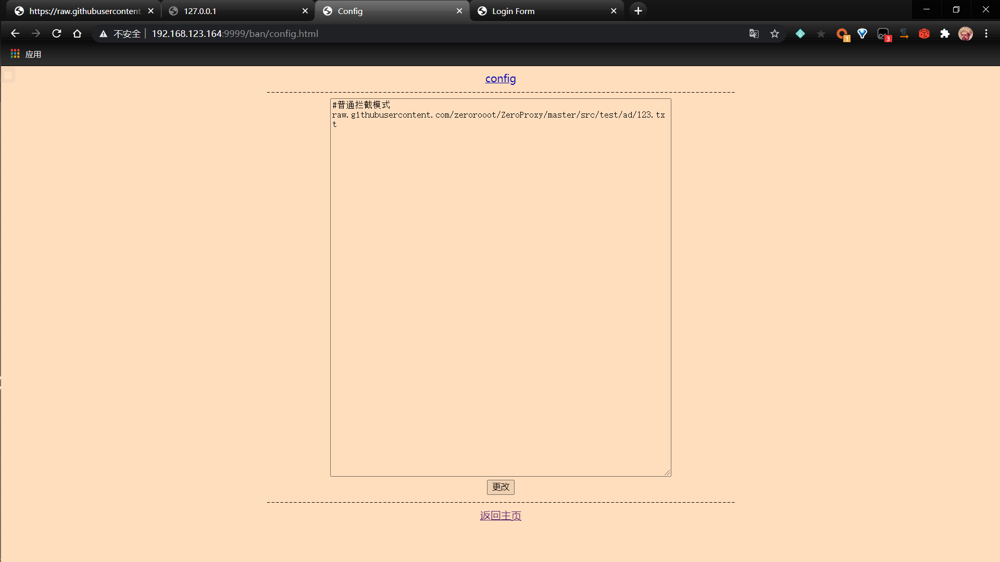
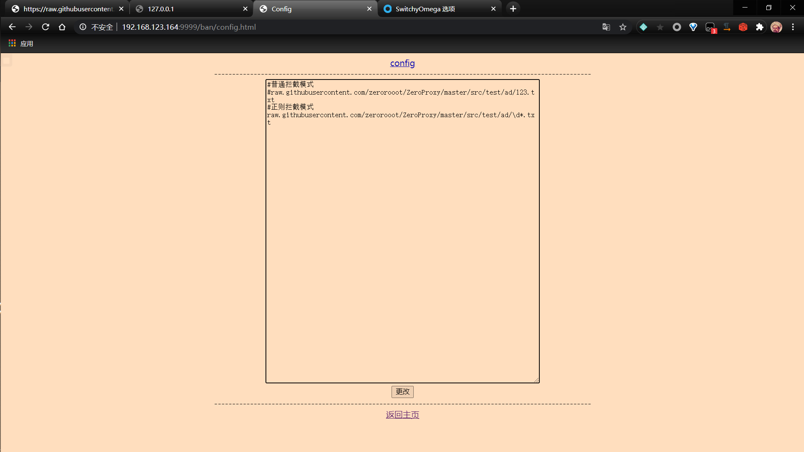
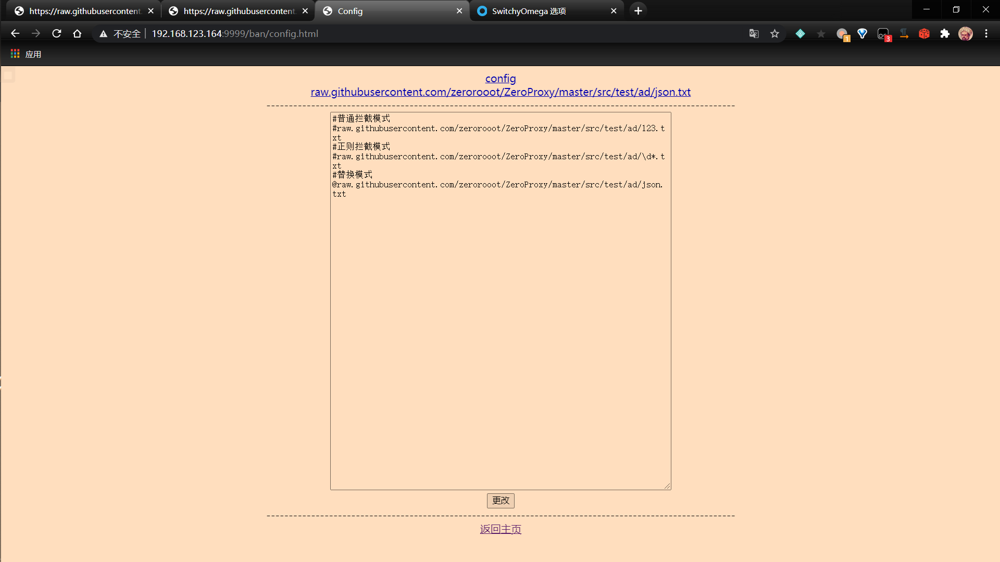
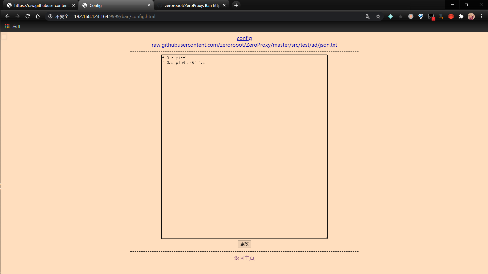

使用ZeroProxy去广告
之前使用privoxy去广告，文末说了，只能屏蔽http开头的网址，而这次使用ZeroProxy可以屏蔽https类的广告了
使用
下载&编译
安装maven
1 | git clone https://github.com/zerorooot/ZeroProxy.git |
这样，就在target目录下生成了我们需要的ZeroProxy-1.0-jar-with-dependencies.jar文件。
安装证书
下载项目中的src/resources/ca.crt，导入到正确位置。如何导入还请自行搜索
1 | 注：Android 7以及以上，系统不再信任用户安装的证书，你需要root后，下载src/test/913718f3.0，然后把文件移动到 |
运行
1 | java -jar target/ZeroProxy-1.0-jar-with-dependencies.jar ip port configFile account password |
ip
指你的ip地址，为了分享给其他设备使用，这里建议使用内网地址，如 192.168.123.164
port
指ZeroProxy运行的端口，如 9999
configFile
用于存放配置文件的文件夹，要求绝对目录，如 D:\JavaCode\ZeroProxy\src\test
account&password
网页端的账号和密码，这两项不是必要的，不填的话，默认关闭网页控制。
示例
1 | java -jar target\ZeroProxy-1.0-jar-with-dependencies.jar 192.168.123.164 9999 D:\JavaCode\ZeroProxy\src\test admin 123456 |
设置代理
window
设置–》网络和internet–》代理–》手动设置代理–》使用代理服务器其中，地址就是你设置的ip地址，端口就是你设置的端口。在本例子中，地址是192.168.123.164，端口是9999
或
在chrome中下载SwitchyOmega，设置代理协议为http，代理服务器以及代理端口均为你输入的。
android
设置–》wlan和互联网–》wlan–》点击你目前使用的wifi–》点击右上角的“✏”–》高级选项–》代理–》手动–》代理服务器主机名为你设置的IP，代理服务器端口为你设置的端口–》保存
ios
设置–》无线局域网络–》点击你目前使用的wifi–》最下面，http代理–》手动–》服务器为你设置的IP，端口为你设置的端口–》储存
注：必须安装好证书，不然没法使用！！！
配置文件
好了，现在程序已经运行起来了，但还不能去广告，因为我们没有配置相关内容
由于我们开启了网页控制，所以直接进入 http://ip:port/index.html配置即可。
如果你没有开启网页界面，请在configFile下的config.txt里进行配置
处理网址
对所有的网址都要进行处理，不然无法得到你想要的结果。
需要删除开头的
https://
以及后面的参数（“？”以及“？”后的内容）。
例
假设，通过抓包，找到了此网址为广告地址
1 | https://raw.githubusercontent.com/zerorooot/ZeroProxy/master/src/test/ad/123.txt?signal=12fsaw34567&time=8765431352 |
删除网址前面的
1 | https:// |
和网址“?”以及后面的内容
1 | ?signal=12fsaw34567&time=8765431352 |
把
1 | raw.githubusercontent.com/zerorooot/ZeroProxy/master/src/test/ad/123.txt |
输入到配置文件里
拦截请求
普通拦截
把
1 | raw.githubusercontent.com/zerorooot/ZeroProxy/master/src/test/ad/123.txt |
输入到文本框里，并点击更改。
最终效果是这样的👇

然后，再次进入
我们发现，网址被重定向到了127.0.0.1，成功实现了网址拦截
正则拦截
但要是每次请求的网址都有变呢？难道要把所有的网址都存下来吗？明显不现实。
注释“raw.githubusercontent.com/zerorooot/ZeroProxy/master/src/test/ad/123.txt”
新加一条
1 | raw.githubusercontent.com/zerorooot/ZeroProxy/master/src/test/ad/\d*.txt |
输入到文本框里，并点击更改。
最终效果是这样的👇

进入
https://raw.githubusercontent.com/zerorooot/ZeroProxy/master/src/test/ad/345.txt
和
https://raw.githubusercontent.com/zerorooot/ZeroProxy/master/src/test/ad/123.txt
发现均被拦截。
检测书写规则是否奏效
由于正则可能存在转义等一堆问题，难道要没次都傻傻的进入被拦截的网址测试吗？明显太蠢了。
点击最下方的 “返回主页”
在最上面，看到要测试的url。输入
1 | https://raw.githubusercontent.com/zerorooot/ZeroProxy/master/src/test/ad/345.txt |
返回的是true，证明我们书写的正则奏效了。
注
拦截请求这么配置就ok了。注意的是，对于某广告网址，需要先删除开头的https://,以及后面的参数（“？”以及“？”后的内容）。
更改返回的json
假设，通过抓包，找到了json的返回网址
1 | https://raw.githubusercontent.com/zerorooot/ZeroProxy/master/src/test/ad/json.txt?signal=12fsaw34567&time=8765431352 |
替换模式
替换模式是指替换json里某个值
把刚才抓到的包经过处理后，在最前面加上”@”,加入文本框，并点击更改。
最终效果是这样的👇

我们发现，在最上方，出现了此网站的网址，点击。
输入
1 | f.0.a.pic=1 |
保存，再次进入
1 | https://raw.githubusercontent.com/zerorooot/ZeroProxy/master/src/test/ad/json.txt?signal=12fsaw34567&time=8765431352 |
我们发现，返回的json变成了
1 | {"f":[{"a":{"pic":1},"b":"c"},{"a":{"pic":"a"},"b":"c","d":"e"}],"test":true} |
成功实现了替换。
替换的规则
从刚才的例子可以看出，替换的规则非常的简单，即
1 | 节点.节点.节点=你想要的值 |
在此例子中，我们把jsonObject中的“f”，中的jsonArray“0”，中的jsonObject“a”，中的jsonObject“pic”，从123改成了1
如果对此不熟练的话，可以点击网页最下方的“返回主页”，将要测试的json输入“要测试的json：”里，将你使用的规则输入“使用的规则：”里，点击检测即可
删除模式
删除模式是指，当某节点的值等于你输入的值时，删除某节点
添加
1 | f.0.a.pic@=.*@f.1.a |
保存，最终效果是这样的👇

进入再次进入
1 | https://raw.githubusercontent.com/zerorooot/ZeroProxy/master/src/test/ad/json.txt?signal=12fsaw34567&time=8765431352 |
我们发现，返回的json变成了
1 | {"f":[{"a":{"pic":1},"b":"c"},{"b":"c","d":"e"}],"test":true} |
成功实现了对f.1.a的删除
删除的规则
而删除的规则和替换差不多，多是的后面带“@”的部分
1 | 节点.节点.节点@=存在的值@删除节点.删除节点.删除节点 |
“节点.节点.节点@=存在的值”是指某节点的值等于你输入的值时，删除“删除节点.删除节点.删除节点”的内容，其中，“存在的值”可以使用正则。
在刚才的例子中，当jsonObject中的“f”，中的jsonArray“0”，中的jsonObject“a”，中的jsonObject“pic”，等于任何值时，删除jsonObject中的“f”，中的jsonArray“1”，中的jsonObject“a”。
如果对此不熟练的话，可以点击网页最下方的“返回主页”，将要测试的json输入“要测试的json：”里，将你使用的规则输入“使用的规则：”里，点击检测即可
1 | 如果同时输入多个规则，包含jsonArray的节点必须按照从大到小的顺序输入，不然可能不起作用！！！ |
#key的生成，这样是生成RSA密钥，openssl格式，2048位强度。ca.key是密钥文件名。
openssl genrsa -out ca.key 2048
#key的转换，转换成netty支持私钥编码格式
openssl rsa -in ca.key -out ca_private.der -outform der
#crt的生成，通过-subj选项可以自定义证书的相关信息
openssl req -sha256 -new -x509 -days 730 -key ca.key -out ca.crt -subj “/C=CN/ST=GD/L=SZ/O=zerorooot/OU=study/CN=ZeroProxy”
1 |
|
命令生成安卓系统所接受的证书，然后把输出的文件移动到
/system/etc/security/cacerts/并给与644权限
当然，对于安卓系统，你也可以安装“move certificates”的magisk模块来解决不信任用户证书的问题
遇到的问题以及替代方案
问题：处理时间太长，导致等待的时间太长
解决：此问题在笔者的树莓派3b+，32位系统中存在（现在已经升级到了64位，到的了很好的解决）。可以尝试使用prioxy中的actionsfile分流。或者换台好点的服务器
问题：太占内存
解决：确实比较占内存，实测内存大约在150Mb300Mb之间，由于笔者技术所限使用java语言，暂时没有好的解决办法。可以尝试加内存~~
问题：登不上网页
解决：确定开启了网页模式，清除网页cookie后再重试（发生于改账号、密码后）